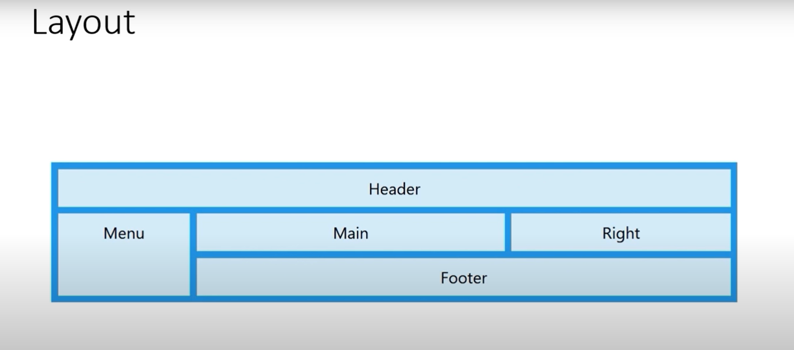
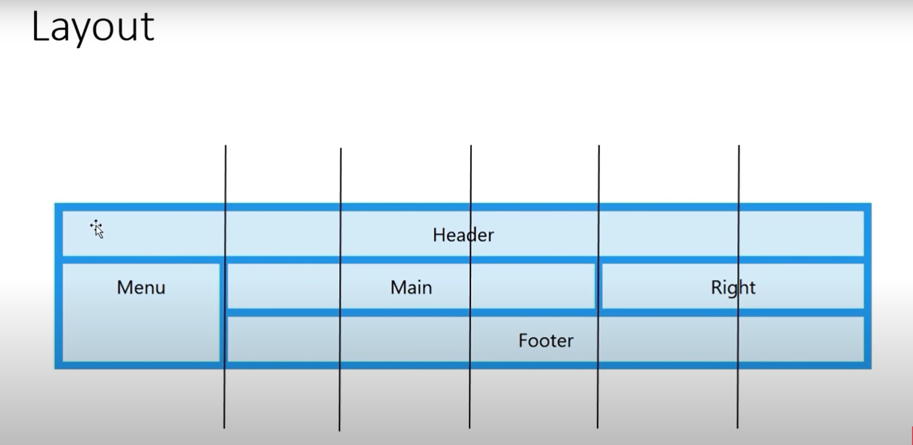

- It is more popular way of defining a grid layout.
- Suppose we want to make a layout like :

- instead of giving grid-line numbers in grid-area , we give a certain name to them. Like:
#div_one{
grid-area: header;
}
#div_two{
grid-area: menu;
}
#div_three{
grid-area: main;
}
#div_four{
grid-area: right;
}
#div_five{
grid-area: footer;
}
- Now we divide our consept layout into equal grids , Like:

- Now in the parent div, we construct the table by writing the area names we defined earlier in grid-template-areas tag the same way we devided layout into grids.
#parent_div{
grid-template-areas:
'header header header header header header header'
'menu main main main right right'
'menu footer footer footer footer footer';
}
- It will make the layout just like our desired layout.
Example: